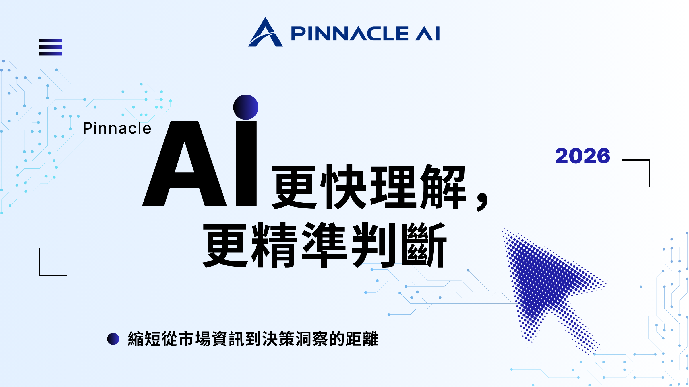
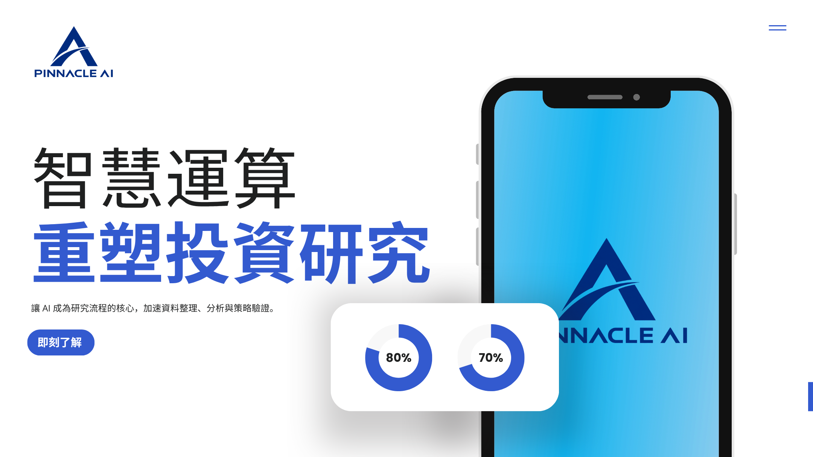

金融資料工程
處理歷史行情、新聞事件、不同資產頻率與異常值，讓後續模型研究建立在一致且可檢查的資料基礎上。
SYSTEM FOUNDATION
Pinnacle AI量化投資系統（Pinnacle AI 系統）將技術能力與市場實務放在同一套流程中，讓資料、模型、策略與風險管理彼此連動。
處理歷史行情、新聞事件、不同資產頻率與異常值，讓後續模型研究建立在一致且可檢查的資料基礎上。
運用自然語言處理與資料分析能力，協助系統從大量市場資訊中辨識事件脈絡、情緒變化與可能影響。
透過假設、回測、壓力測試與跨市場驗證，檢查策略是否只適用單一行情，並持續修正模型限制。
系統設計重點不是宣稱預知未來，而是持續判讀當下環境，包括波動、流動性與市場結構變化。
將部位、曝險、策略失效與異常狀態納入研究流程，避免模型只追求表面績效而忽略承受能力。
不以單一歷史曲線判斷價值，而是透過不同資料區間、情境與條件，觀察策略穩定性與適用範圍。
RESEARCH THEMES
以不同研究主題呈現Pinnacle AI 系統關注的資料、連結、分析與方法，協助讀者快速理解整體方向。

把人工智慧能力轉化為可檢查的金融研究流程。

以一致資料架構整理不同市場與資產資訊。

從多源資訊中辨識事件脈絡與研究線索。

透過回測、壓力測試與風險條件檢查假設。
RESEARCH PIPELINE
每個階段都有清楚任務，讓系統研究不只是產生訊號，也能追溯訊號如何形成。